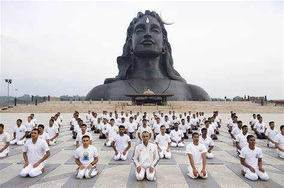

Yoga for Kids

Fun, Story-Based Yoga for a Healthy Mind and Body
Yoga is more than just exercise—it helps children develop strength, flexibility, and mindfulness while connecting with India’s rich heritage. This program introduces kids to yoga through engaging stories from Indian mythology, making each pose both fun and meaningful.
Mythological Stories Behind Yoga Poses
1. Hanuman’s Leap (Hanumanasana – Monkey Pose)
Inspired by Hanuman’s powerful leap across the ocean to reach Lanka, this pose strengthens the legs and improves flexibility.
Benefits:
Stretches the hamstrings and hips
Enhances leg strength and agility
Encourages confidence and determination
2. The Serpent Vasuki (Bhujangasana – Cobra Pose)
The great serpent Vasuki, coiled around Lord Shiva’s neck, represents strength and wisdom. This pose mimics a cobra lifting its hood.
Benefits:
Strengthens the spine and back muscles
Opens up the chest for better breathing
Improves focus and energy
3. The Wise Tree (Vrikshasana – Tree Pose)
Inspired by the deep-rooted trees of Indian forests, this pose teaches balance and steadiness, just like ancient sages meditating under trees.
Benefits:
Improves concentration and stability
Strengthens leg muscles
Encourages patience and focus
4. The Playful Lion (Simhasana – Lion Pose)
This pose, inspired by the mighty lion, involves stretching the face and roaring like a lion, making it both fun and beneficial for children.
Benefits:
Strengthens facial muscles
Relieves tension in the throat and voice
Builds confidence and self-expression
5. The Sleeping Tortoise (Kurmasana – Tortoise Pose)
Just like a tortoise withdraws into its shell, this pose helps children relax their minds and bodies.
Benefits:
Encourages deep relaxation
Enhances flexibility in the back and legs
Teaches patience and stillness
Breathing and Mindfulness Practices
1. Bee’s Humming (Bhramari Pranayama)
Children imitate the sound of a buzzing bee, which calms the mind and improves focus.
Benefits:
Reduces stress and anxiety
Enhances breathing awareness
Improves concentration
2. Balloon Belly Breathing
Kids imagine filling a balloon in their belly as they inhale and deflating it as they exhale, making breathwork playful.
Benefits:
Teaches deep breathing techniques
Improves lung capacity
Helps in relaxation and better sleep